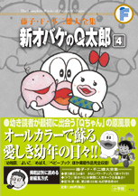

| |

定価1,890円（税込）
A5判／406ページ
好評発売中！
すべて単行本に初収録です。
※収録内容は変更になる
場合があります。

|
| つくしをさがせ（幼稚園1971年4月号） |
| しゃぼんだま（幼稚園1971年5月号） |
| なわとびでどっきり！（幼稚園1971年6月号） |
| ヨットをうかべよう（幼稚園1971年7月号） |
| 何匹つれるかな？（幼稚園1971年8月号） |
| かいじゅうより強いもの!?（幼稚園1971年9月号） |
| やまのぼり（幼稚園1971年9月増刊 |
| えんそくに行きたい（幼稚園1971年10月号） |
| イヌがにがてなQちゃん（幼稚園1971年11月号） |
| こわれたそうじき（幼稚園1971年12月号） |
| たこあげに挑戦（幼稚園1972年1月号） |
| おかしなまめまき（幼稚園1972年2月号） |
| こうえんであそぼう（幼稚園1972年3月号） |
| ようちえんごっこ（幼稚園1972年4月号） |
| オバＱ飛行機（幼稚園1972年5月号） |
| あめのそうじ機（幼稚園1972年6月号） |
| ボートにのろう（幼稚園1972年7月号） |
| ドロンパと対決（幼稚園1972年8月号） |
| ハイキング（幼稚園1972年8月号）増刊 |
| ゆびにんぎょう（幼稚園1972年9月号） |
| アフリカへえんそく!?（幼稚園1972年10月号） |
| ドライブ（幼稚園1972年11月号） |
| せんろをつくろう（幼稚園1972年12月号） |
| ゆきだるま（幼稚園1973年1月号） |
| うまとび（幼稚園1973年2月号） |
| Qちゃんのゆうびんやさん（よいこ1971年4月号） |
| おふろぎらいの正ちゃん（よいこ1971年5月号） |
| バケラッタのО次郎（よいこ1971年6月号） |
| メロンにあつまれ！（よいこ1971年7月号） |
| はなびをやろう（よいこ1971年8月号） |
| プールへつれてって（よいこ1971年9月号） |
| お月さま出ないかな？（よいこ1971年10月号） |
| きのこがりで大さわぎ（よいこ1971年11月号） |
| ゆび人形救出隊（よいこ1971年12月号） |
| いそがしいお正月（よいこ1972年1月号） |
| おもち対決（よいこ1972年2月号） |
| 手紙はOちゃんに…（よいこ1972年3月号） |
| 花見とごちそう（よいこ1972年4月号） |
| まいごになったQちゃん（よいこ1972年5月号） |
| パパのおむかえ（よいこ1972年6月号） |
| おとしものさがし（よいこ1972年7月号） |
| うみに行きたい（よいこ1972年8月号） |
| 手紙を出しに…（よいこ1972年9月号） |
| いじわるな木佐くん（よいこ1972年10月号） |
| 特急Qちゃん号（よいこ1972年11月号） |
| おしいれレストラン（よいこ1972年12月号） |
| Qちゃんのはねつき（よいこ1973年1月号） |
| 雪だるまさわぎ（よいこ1973年2月号） |
| Qちゃんのびっくり箱（よいこ1973年3月号） |
| のみこんだ人形（よいこ1973年4月号） |
| たのしいおみせやさん（めばえ1971年4月号） |
| かぶとがあるいてる!?（めばえ1971年5月号） |
| きんぎょがほしい（めばえ1971年6月号） |
| おふろにはいりなさい（めばえ1971年7月号） |
| あめでもやまのぼり（めばえ1971年8月号） |
| Qちゃんの虫とり（めばえ1971年9月号） |
| 人形の家（めばえ1971年10月号） |
| 柿のかわりになるものは…（めばえ1971年11月号） |
|
| おつかいそうどう（めばえ1971年12月号） |
| おもちをまるめよう（めばえ1972年1月号） |
| 下りられないたこ上げ（めばえ1972年2月号） |
| ひこうきあそび（めばえ1972年3月号） |
| 赤信号じゃ逃げられない（めばえ1972年4月号） |
| こいのぼり（めばえ1972年5月号） |
| あめでも へいきだよ（めばえ1972年6月号） |
| しゃぼんだまをとばそう（めばえ1972年7月号） |
| Ｑちゃんせんぷうき（めばえ1972年8月号） |
| オバＱのおまつり（めばえ1972年9月号） |
| かくれんぼ（めばえ1972年10月号） |
| おおきな いぬごや（めばえ1972年11月号） |
| Ｑちゃんのお守り（めばえ1972年12月号） |
| おもちで大さわぎ（めばえ1973年1月号） |
| かるたとり（めばえ1973年2月号） |
| かみくずは くずかごに（めばえ1973年3月号） |
| おすもうで勝ったのは…（めばえ1973年4月号） |
| おそば ながいぞ（めばえ1973年5月号） |
| 正ちゃんとけんか!?（めばえ1973年6月号） |
| 配達はまかせて（めばえ1973年7月号） |
| お花をまもれ！（めばえ1973年8月号） |
| 大きなかざぐるま（めばえ1973年9月号） |
| カラスと遊ぼう（めばえ1973年10月号） |
| お面とねこ（めばえ1973年11月号） |
| しゃぼん玉競争（めばえ1973年12月号） |
| Oちゃんの三輪車（めばえ1974年1月号） |
| なかよくなわとび（めばえ1974年2月号） |
| おどろいたのはだれ？（めばえ1974年3月号） |
| ままいってらっしゃい（ベビーブック1971年4月号） |
| つみきあそび（ベビーブック1971年5月号） |
| おりこうさん（ベビーブック1971年6月号） |
| おうま ぱか ぱか（ベビーブック1971年7月号） |
| すいかわり（ベビーブック1971年8月号） |
おかあさんがよんでるよ
（ベビーブック1971年9月号） |
| ふうせん（ベビーブック1971年10月号） |
| どうぶつえん（ベビーブック1971年11月号） |
ありがとうと、いえるかな
（ベビーブック1971年12月号） |
| あぶないあぶない（ベビーブック1972年1月号） |
| すぽうつかあ（ベビーブック1972年2月号） |
| やさいのきしゃ（ベビーブック1972年3月号） |
| じどうしゃがほしいな（ベビーブック1972年4月号） |
こどもじどうしゃはおもしろいね
（ベビーブック1972年5月号） |
わかりますか（生活編）
（ベビーブック1972年6月号） |
| でんしゃごっこ（ベビーブック1972年7月号） |
| ゆうえんち（ベビーブック1972年8月号） |
| なかよしきょうだい（ベビーブック1972年9月号） |
わかりますか（自動車編）
（ベビーブック1972年11月号） |
| きりんさんのぶらんこ（ベビーブック1972年12月号） |
| ゆうびんやさん（ベビーブック1973年1月号） |
| おにはそと ふくはうち（ベビーブック1973年2月号） |
| いただきます（マミイ1972年10月号） |
おばけのきゅうたろう（歌詞）
（幼児の知能絵本1971年4月号） |
|